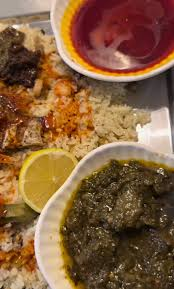

Foléré

Description
Sauce Foléré (also called hibiscus leaf sauce) is a beloved traditional dish from northern Cameroon, made from the tender young leaves of Roselle (Hibiscus sabdariffa). These leaves are finely chopped, rinsed to reduce their natural tanginess, and simmered slowly until they release their juices and soften into a silky green base.
The sauce is then enriched by cooking in oil with ingredients like onions, garlic, tomatoes, and sometimes smoked or dried fish—plus savory seasonings such as soumbala (a fermented African seasoning) for a deeper umami kick. Next, a creamy element is introduced: ground peanut paste is stirred in, binding everything into a luxuriously thick and protein-packed sauce.
Served over rice, maize couscous, or locally made rice fufu, Sauce Foléré shines with vibrant contrasts—slightly tart greens, smooth nuttiness, aromatic depth from spices, and satisfying richness. It’s rustic, nourishing, and full of regional flair—a real comfort food that speaks to tradition with every spoonful.
Ingredients
- Foléré leaves (young hibiscus sabdariffa leaves) – finely chopped and rinsed
- Ground peanut paste – for richness and protein
- Oil, typically palm oil or cooking oil
- Onion – diced
- Garlic – minced
- Tomato – fresh or paste, for flavor depth
- Meat or fish (optional) – e.g., beef, smoked chicken, or dried fish
Spices & seasonings :
- Soumbala (fermented locust bean) or bouillon seasoning
- Salt and pepper
- Optional hot peppers
Steps
- Prep the Peanut Paste
Roast about 400 g of peanuts (groundnuts) until golden and fragrant. Let them cool.
Remove their skins and grind into a smooth paste with a bit of water. Set aside.
-
Clean & Blanch the Foléré Leaves
Rinse the sorrel (hibiscus sabdariffa) leaves thoroughly.
or blanch them in boiling water briefly—this softens the leaves and reduces bitterness. Drain and chop roughly.
-
Sauté Aromatics
In a pot, heat palm oil.
Add chopped onions and minced garlic, sauté until soft and golden. Optionally add chopped tomatoes and chili pepper for heat.
-
Combine Leaf & Peanut Base
Stir in your homemade peanut paste, mix well with the aromatics.
Add the blanched foléré leaves and chopped tomatoes (if not already added).
Season with salt, pepper, and chili to taste.
-
Simmer to Perfection
Let the sauce bubble gently for about 20 minutes, stirring occasionally so the paste doesn't stick to the pot. The flavors should meld and the sauce thicken slightly. You can optionally add meat (beef, chicken) at this stage—just ensure it's cooked through.
Home